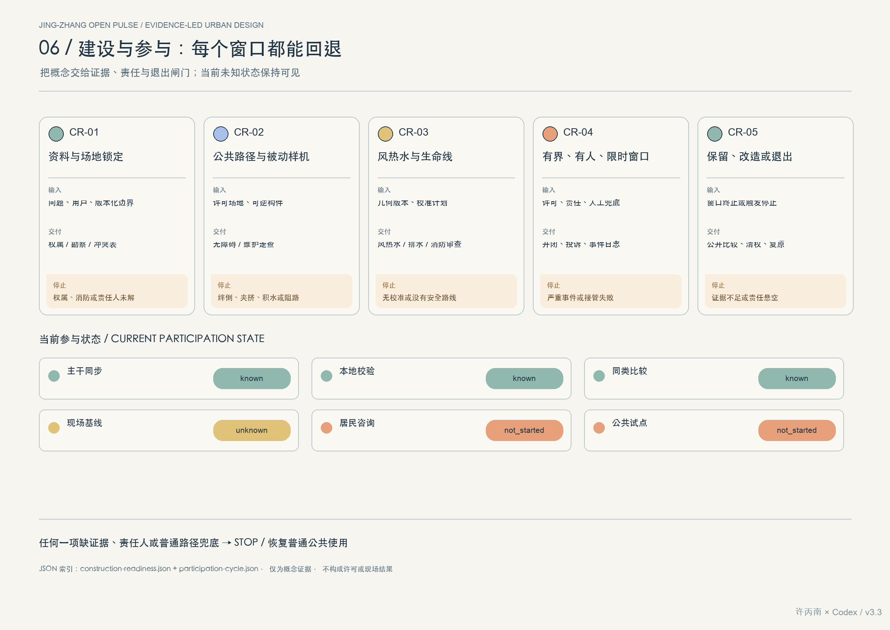
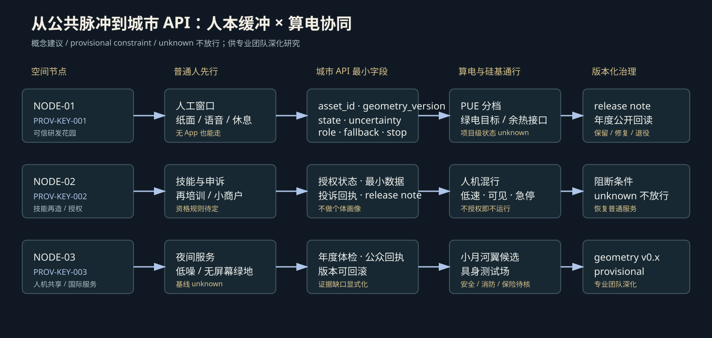

京张开源脉冲
一条以公共空间为主体、以 AI 为可撤回工具的创新带。两条铁路串联三处城市客厅，连续慢行与蓝绿网络承担日常服务；所有智能场景只在有人负责、可停止、可回到普通路径的窗口内运行。

所有空间图均源自当前提交包的 GeoJSON、metrics 与注明许可的 OSM 背景筛查。边界背景核对曾发现已测绘公园片段与临时总体 polygon 不相交；该偏差只触发官方 polygon 交接，不修正本包红线。公开统计与情景模型仅是辅助决策接口，不是官方评分、CFD、SWMM、碳核算或现场绩效；官方边界、气象/管网数据、居民调查、机器人测试和资产台账到位后必须重算。
V3.3 公共智证回路：AI 只在有界窗口内工作
三处交接：众智园是可信测试花园，AI 原点社区是开放转化街，大钟寺是城市体验客厅。每一步都有普通人等价路径、停止条件和维护责任；协议仅为概念交接，不是数字城市建设许可。
首个可复核切片：S02 低速配送机器人合成演练
这是合同级合成窗口，不是现场性能。暂不做真实配送、不开放公共道路；无障碍路线保持连续，行人冲突、路线阻断、急停失效、失去观察视线或回位湾不可用立即停止。只记录合成 run ID、路线窗口和让行/急停/回位事件，不收集个人数据；纸面告知、可见停止状态、无数字解释和人工等价服务是前置条件。
S02 合成测试窗口记录 JSON · 测试窗口 Schema · `result_status=not_run` / `release_decision=hold`
V3.6 S02 桌面合同回放：只验证停机与回退
这是无网络、无参与者、无外部系统的包内合成回放，只检查停机、撤回、普通服务和临时状态清理；operational_status=not_authorized_not_run、result_status=not_run，不证明机器人性能、无障碍、公共接受度、安全、人员配置或许可。合同 JSON · 回放证据 JSON · 运行器 · node visual/assets/run-open-pulse-tabletop.js --check
空间与验证指标：先读判断，再读复算
这些数值是提交几何、可复算记录或相对决策实验的接口；MCDA 数值目前只是已声明的设计实验结果，GATE-04 尚未通过，不能当作包内已独立复算的 known metric。带 * 的序列不是官方评分或现场绩效。所有官方边界、气象/管网、居民调查、机器人测试和资产台账到位后必须重算。九个页面数字的来源、原始值路径和对应图件见 页面数字回读表，可用 离线运行器复核。
五方案 × 五权重画像 × 八压力情景 × 50,000 次抽样
v1.5 全状态证据账本
设计目标是未来复核接口，不是现状成绩、现场绩效或竞赛评分；达到条件前保持 unknown，触发阻断时回到普通公共服务。
S4 的声明结果为平均遗憾 0.314、八压力最低综合分 67.194，五项硬闸门的声明结果为通过；这些数值待 MCDA 输入和 runner 随包提供后复算。S2 在“气候优先”画像下胜出，提示下一阶段仍须强化被动生态基础设施。热浪、云暴、干旱、断网、机器人增量、活动人流、维护缩减和冻融均设明确回退。
v1.6 官方时间序列与方案优化

v1.8 任务 → 证据 → 运营 → 回退


任务书交叉索引 JSON · 区域生态 JSON · 14 条场景运营矩阵 JSON · 8 项运维行动包 JSON · 5 本资源账 JSON · 42 张政策—企业成长卡 JSON · 4 个产业验证场 JSON · 组件库 JSON · 6 个政策案例 + 机制比较 JSON · 政策与企业发展交叉索引 JSON · 4 个责任/荣誉节点 JSON · 节点级计划 JSON · 行政尺度基线 JSON · 公共利益审计 JSON · 测试窗口记录 Schema · S02 合成测试窗口记录 · QA 记录 · 现场测量协议 · 清权台账 JSON · English review copy
场景合同结构审计：14 × 8 + 3 负例
这是包内 JSON 的确定性结构回放，不是现场、运营、工程或公开试点结果；缺 accountable、缺人工等价路径/停止条件或缺行动包停止条件都会被审计器拒绝。回读结果 · 运行器

建设/开放闸门与参与状态
当前已知：主干同步、本地校验和同类比较；现场基线、居民咨询、公共试点仍为 unknown/not_started。没有把这些状态写成已获许可或已达标。



北京气候适应、气象公开目录、海绵城市、通风网络、具身智能、无障碍、韧性基础设施、资产管理、鸟类保护和夜景照明资料；GB/T 45502、ISO 55001、ISO 13482 / ISO/TR 4448-1；NIST、WHO、IPCC。空间范围仍为 provisional，OSM 仅作背景筛查。
V3.3 一构件一智证里程：空间动作必须独立过门
每个构件都有自己的公共问题、空间锚点、普通路径、维护责任、正负证据和退出决定；一个构件通过不等于整条带通过。详见 Proof-Mile JSON。
三态回读：普通服务 → 有界测试 → 退出/修复
状态板、纸面服务、排水/无障碍工单和人工接管必须先于任何模型输出；失败时自动化退场，普通路径和被动构件继续工作。
四季运营：活动不是终点，证据才是回流
四季活动与长期运营 JSON · 每季都保留普通服务、人工责任、维护触发器和企业/公共服务转化路径；这是概念运营协议，不是获批活动日历。
运营保障合同：责任、保险、网络与雨洪公平
运营保障合同 JSON · 每个窗口登记责任、普通等价服务、保险假设、网络事件、雨洪公平、事故公开摘要和回退；这是概念审阅接口，不是保险单、法律意见或工程认证。
人本缓冲 × 城市 API × 算电协同

人本缓冲层把居民连续性、小商户回迁、技能再造、人工通道、代际共学、夜间服务和无屏幕绿地落到空间锚点；不宣称现状保留率、就业结果、服务覆盖或健康绩效。算电条款只引用北京政策作为证据门，不证明本走廊有数据中心、热网、绿电合同或节能量。